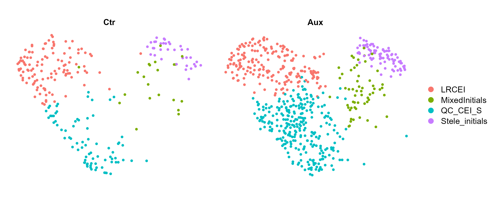
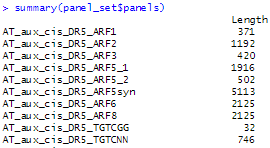

This tutorial demonstrates an end-to-end workflow to apply iSensors R package to a single-cell RNA-seq (scRNA-seq) dataset stored as a Seurat object. You will compute integrative sensors (iSensors) activity scores from predefined gene panels, visualize sensor activity, and test condition effects, and develop custom iSensors panels.
- Input: Seurat object (
seu) - Metadata: sample/replicate ID (e.g.,
orig.ident) and condition labels - Output: iSensors assay(s) in the seurat object with cellular scores for the set of iSensors, figures, and a differential isensor table
Contents
1) Install & load packages
Install iSensors from GitHub and load core dependencies. If you already have these packages, skip installation.
# Core packages
install.packages(c("Seurat", "Matrix", "tidyverse", "magrittr", "purrr", "stringr", devtools))
# Bioconductor dependency used by iSensors for generating cis-sensors
if (!requireNamespace("BiocManager", quietly = TRUE)) install.packages("BiocManager")
BiocManager::install("Biostrings")
# Install iSensors from GitHub
devtools::install_github("MironovaLab/iSensors")
library(Seurat)
library(iSensors)
library(tidyverse)
2) Load your scRNA-seq Seurat object
Load your processed scRNA-seq Seurat object (after QC, normalization and scaling).
seurat_obj <- readRDS("path/to/your_scRNAseq_seurat.rds")
DefaultAssay(seurat_obj) <- "RNA"
DimPlot(seurat_obj)
In this tutorial, we explore a subset of an auxin-treated Arabidopsis thaliana single-cell transcriptomics dataset originally published in Martin-Arevalillo et al., 2025. The complete raw and processed dataset is available from GEO.
For didactic purposes, we provide a reannotated piece of the dataset for the root stem cell niche, as a lightweight reclustered Seurat object. This reduced dataset is intended solely for demonstration and tutorial use. Annotation quality is not guaranteed. Use this script to load the object.
3) Load iSensors
Load the gene panel set you want to score. The example below shows loading auxin-related panels for Arabidopsis. Adjust species and
hormone to your use case. As a negative control, three random panels of different sizes are loaded in addition to the whole genomic trend.
panel_set <- LoadSensors(setName = 'AuxinPanel',
species = 'AT',
hormone = 'aux',
randomInfo = list('n' = 3, 'sizes' = c(100, 200, 300), majortrend = TRUE))
summary(panel_set$panels)This command load panels available for the organism and hormone. In the test case it loads 67 iSensors, each consists of specific set of genes. Below we will discuss how to create custom iSensors
4) Compute iSensors
Compute sensor activity scores with CalcSensors() function.
seu_is <- CalcSensors(
seurat_obj,
seurLayer = "data",
panelSet = panel_set,
signals = "mean_normed"
)
Assays(seu_is)Layer and function choice
- Recommended default: compute iSensors on
seurLayer = "data"(log-normalized). - If using SCT, you can still compute sensors on RNA
datafor interpretability. - To calculate iSensors use
mean_normedormedian_normed, both show good results in our tests.
Tip: If you are unsure where iSensors scores are stored, inspect Assays(seu_is).
5) Visualize iSensors activity
After you set DefaultAssay to the assay containing iSensors, you may apply standard Seurat functions for analytics and vizualization.
6.1 FeaturePlot
Select one or several iSensor feature names and visualize it on your embedding (UMAP/tSNE). In the example below we chose three iSensors, all pointing out to higher auxin levels in the initials comparing their doughters.
# Example: list assays and set the right one before plotting
Assays(seu_is)
# DefaultAssay(seu_is) <- "YOUR_ISENSORS_ASSAY"
sensor_name <- "YOUR_SENSOR_NAME"
FeaturePlot(seu_is, features = sensor_name)6.2 Dot Plot
#Choose your iSensors set
sensors<- c("YOUR_SENSOR_NAME1", "YOUR_SENSOR_NAME2", "YOUR_SENSOR_NAME3", ...)
DotPlot(seu_is, features = sensors)
The DotPlot below vizualizes iSensors expression in different cell types group.by = "YOUR META DATA IDENT1" split by condition group.by = "YOUR META DATA IDENT2". The data predicts cell type specific responses to exogenous aauin, i.e., auxin syntesis is switched off in potential CEI Daughters.
7) Differential iSensors activity
This section shows how to identify cell-type–specific iSensors (i.e., which sensors are enriched in one
cluster group versus others) using Seurat’s
FindAllMarkers(). Note that FindAllMarkers() uses per-cell tests; for replicate-aware inference, use pseudobulk models.
is_markers <- FindAllMarkers(
object = iSensors_obj,
only.pos = TRUE, # set FALSE if you also want depleted sensors
test.use = "wilcox",
logfc.threshold = 0, # keep all; filter later
)
Interpretation and caveats
- What this tests: which iSensors best distinguish
cluster_annotgroups. - What this does not test: Aux vs Ctr effects within a cell type (use
FindMarkers()per cell type or pseudobulk models). - Replicates: per-cell Wilcoxon can produce very small p-values when cell counts are large; treat significance as descriptive unless you use replicate-aware statistics.
Markers_is <- FindAllMarkers(
object = seu_is,
group.by = "orig",
) 7.2 Extract sensor values and build pseudobulk table
# Provide the sensor names you want to analyze.
# Option 1: use a curated vector (recommended)
sensor_vars <- c("YOUR_SENSOR_1", "YOUR_SENSOR_2") # replace
# Option 2: if you can derive names from panel_set (depends on panel_set structure)
# sensor_vars <- names(panel_set$panels)
sens <- FetchData(seu_is, vars = sensor_vars) %>%
tibble::rownames_to_column("cell")
df <- meta %>% inner_join(sens, by = "cell")
# Pseudobulk per sample (global)
pb_global <- df %>%
group_by(sample_id, condition) %>%
summarise(
across(all_of(sensor_vars), ~mean(.x, na.rm = TRUE)),
n_cells = n(),
.groups = "drop"
) %>%
filter(n_cells > 0) %>% # important safeguard
pivot_longer(cols = all_of(sensor_vars), names_to = "iSensor", values_to = "score")
pb_global7.3 Limma test on pseudobulk sensor scores
library(limma)
# sensors x samples matrix
E <- pb_global %>%
tidyr::pivot_wider(names_from = sample_id, values_from = score) %>%
as.data.frame()
rownames(E) <- E$iSensor
E$iSensor <- NULL
E <- as.matrix(E)
sample_meta <- pb_global %>%
distinct(sample_id, condition, n_cells) %>%
arrange(match(sample_id, colnames(E)))
design <- model.matrix(~ condition, data = sample_meta)
fit <- lmFit(E, design)
fit <- eBayes(fit)
res <- topTable(fit, coef = "conditionTrt", number = Inf, sort.by = "P") %>%
tibble::rownames_to_column("iSensor") %>%
as_tibble()
res7.4 Cell-type–aware pseudobulk (optional but recommended)
pb_ct <- df %>%
filter(!is.na(celltype)) %>%
group_by(sample_id, condition, celltype) %>%
summarise(
across(all_of(sensor_vars), ~mean(.x, na.rm = TRUE)),
n_cells = n(),
.groups = "drop"
) %>%
filter(n_cells > 0) %>%
pivot_longer(cols = all_of(sensor_vars), names_to = "iSensor", values_to = "score")
# Next steps:
# 1) Fit within each celltype (limma per celltype), or
# 2) Model score ~ condition + celltype (sample×celltype observations).8) Best practices & common pitfalls
- Prefer replicate-aware inference: pseudobulk per sample (and per cell type) rather than per-cell p-values.
- Document the layer used to compute sensors (
datavscountsvs SCT). - Check sensor names: copy/paste can introduce Unicode dashes; use standard hyphens.
- Control panels: consider random panels for empirical calibration if your study emphasizes discovery.
9) Session info
sessionInfo()